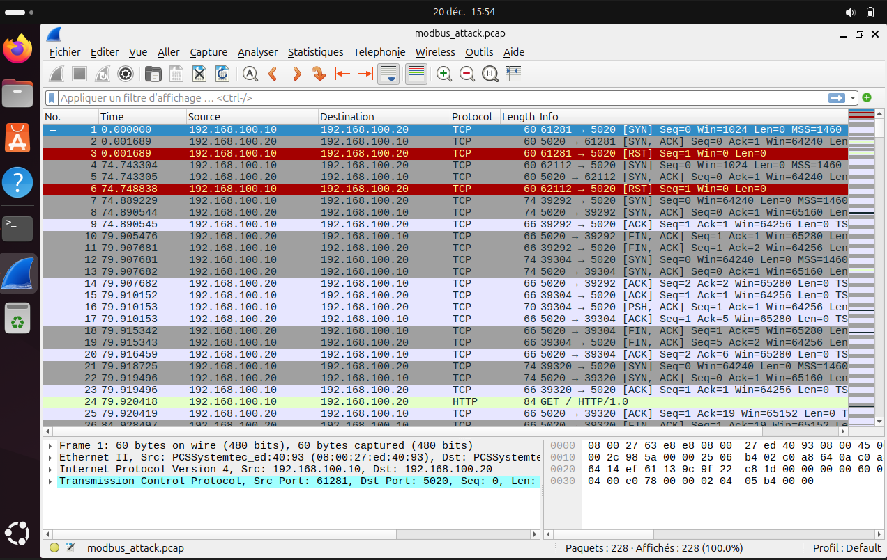
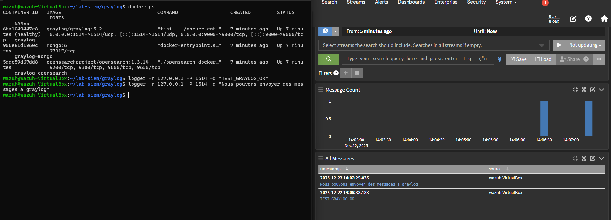
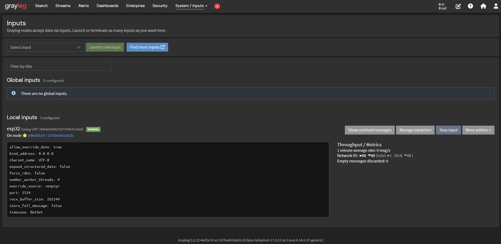
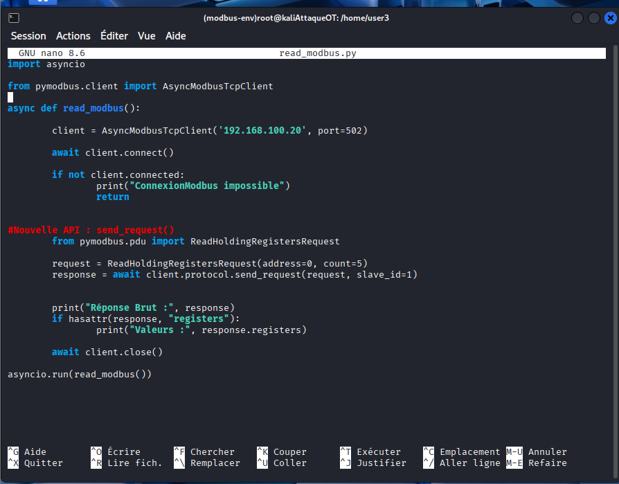
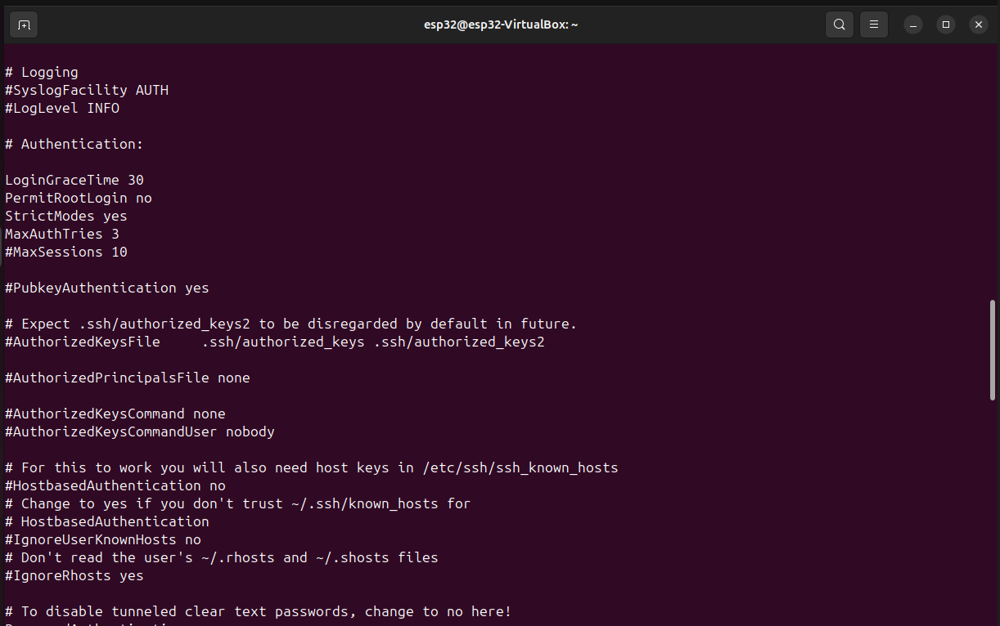
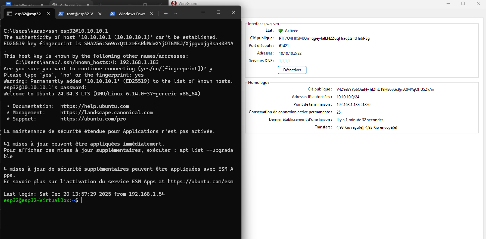

Ce que les captures d'écran racontent.
Une sélection de captures issues des livrables produits pendant le stage — chacune documente une étape réelle du lab, de la configuration système à la détection d'attaque.

Signature d'un scan Nmap dans Wireshark
Capture modbus_attack.pcap : multiples paquets SYN depuis des ports
source différents, connexions courtes (RST/FIN) — signature typique d'un scan TCP
contre le service Modbus (port 5020).

Réception des logs dans Graylog
Vérification de bout en bout de la chaîne de logs : conteneurs Docker (Graylog, MongoDB, OpenSearch) opérationnels, message de test transmis avec succès depuis la VM Wazuh.

Input Syslog dédié à l'ESP32
Configuration d'un input Syslog UDP (port 1514) pour centraliser les événements de l'ESP32 dans Graylog, avec suivi du débit et des métriques réseau en temps réel.

Script de lecture Modbus (Kali)
Script Python (pymodbus) exécuté depuis la VM Kali pour interroger
directement l'automate simulé et valider l'exposition du service avant test d'attaque.

Configuration SSH durcie
PermitRootLogin no, MaxAuthTries 3, authentification par
clé — application des bonnes pratiques serveur sur l'ensemble des VM du lab.

Tunnel WireGuard actif
Connexion administrateur établie via VPN chiffré vers la VM ESP32, sans exposition directe de SSH sur le réseau — accès validé et transfert de données confirmé.
Portes Ouvertes — Ynov Campus Nanterre
Une partie de ces travaux — la démonstration de l'attaque Modbus et sa détection dans Wazuh — a été présentée en conditions réelles lors des Portes Ouvertes d'Ynov Campus Nanterre, devant un public de futurs étudiants et de familles.
Cet exercice de vulgarisation a demandé un travail différent de la manipulation technique pure : reformuler un scénario d'attaque/détection en quelques minutes, pour un public non expert, sans perdre la rigueur du contenu.